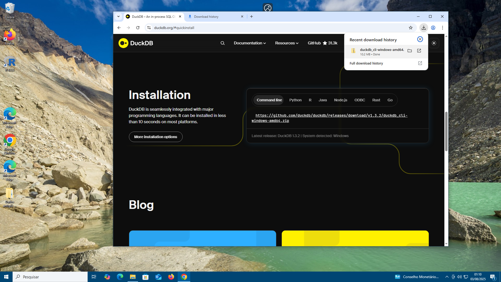

Anexo 1 - Instalando o duckdb
O duckDB https://duckdb.org/ é um banco de dados do tipo OLAP de alto desempenho, de código aberto, desenvolvido para análise de dados em ambiente de memória (in-memory) e processamento de grandes volumes de dados com baixa latência e alta velocidade.
Principais Características
Rápido e eficiente:
- O duckDB é extremamente rápido pois processa dados na memória e sem necessidade de escrever em disco. É ideal para análises interativas e queries complexas, rodando dezenas de vezes mais rápido que R ou python.
Fácil de usar:
- Possui uma interface SQL, permitindo que usuários familiarizados com SQL possam usá-lo facilmente. Também pode ser usado diretamente em Python, R e Julia com bibliotecas de integração.
Lightweight e autônomo:
- Não precisa de servidores, clusters ou instalações complexas. Pode rodar como uma biblioteca em Python, ou diretamente do pacote do R sem instalação de banco de dados dedicado.
Suporte a grandes volumes de dados:
Apesar de ser baseado em memória, o duckDB pode lidar com datasets muito grandes devido a sua otimização interna. Pode lidar com arquivos em disco sendo conteúdo deste é armazenado compactado, por exemplo, um CSV ou um DBF fica menos de 10% do valor original. Trabalha com arquivos modernos amplamente utilizados como parquet e json.
Como instalar no Linux e Mac
Abra um terminal e execute o código abaixo:
curl https://install.duckdb.org | shComo instalar no Windows 10/11
Acesse o link para download ou corte e cole a URL abaixo no seu navegador:
https://duckdb.org/docs/installation/?version=stable&environment=cli&platform=win&download_method=direct&architecture=x86_64Passo a Passo
- Acesse o site do duckDB:
- Clique em Installation e baixe o arquivo do link

- extrair o conteudo da pasta para a área de trabalho
- de um duplo clique no icone do duckdb
Você está na interface de linha do dudkdb , aqui comandos SQL pode ser digitados
- para iniciar a interface gráfica basat digitar:
CALL start_ui();
- Interface gráfica semelhante ao jupyter
Clicando no botão azul “show me the basics” podemos testar o duckdb!
duckDB online
Você também pode testar o duckdb online atraves desses dois sites abaixo: